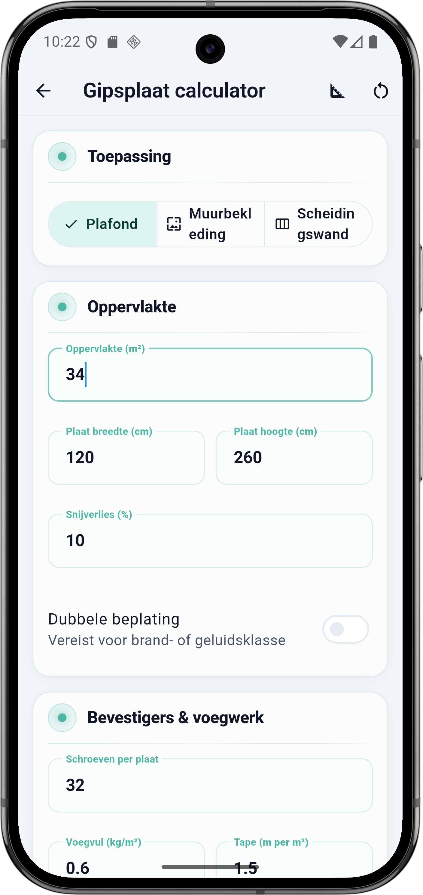
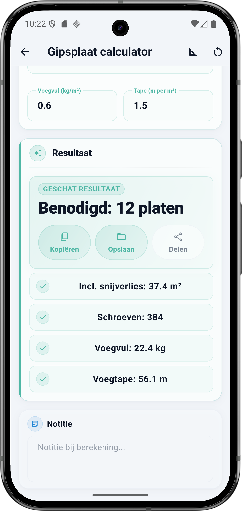

Wat vraagt de calculator
De Gipsplaat calculator heeft vier blokken: Toepassing, Oppervlakte, Dubbele beplating en Bevestigers en voegwerk. Elk veld hieronder komt één-op-één overeen met de app.
Toepassing
- Plafond — standaard toepassing. Lagere schroeven-dichtheid dan muur, zwaardere plafondplaten denkbaar.
- Muurbekleding — gipsplaat op bestaande muur (bijvoorbeeld na nieuwe isolatie). Hogere schroeven-dichtheid aan de randen.
- Scheidingswand — vrijstaand metalstud of houten frame. Bij enkelzijdig plaatsen reken je één zijde, bij dubbelzijdig twee zijden.
Oppervlakte
- Oppervlakte (m²) — de netto te beplaten oppervlakte. Trek grote dakramen, trapgaten of deuren eraf. Een klein stopcontact of inbouwspot zit in het snijverlies.
- Plaat breedte en hoogte (cm) — veelgebruikt in Nederland en België: 120 × 260 (standaard), 120 × 300 (hoge plafonds), 60 × 120 (handzaam voor klein werk).
- Snijverlies (%) — standaard 10%. Verhoog naar 12 tot 15% bij veel hoeken, nissen of een gevlogen plafond.
Dubbele beplating
- Dubbele beplating meeberekenen — zet dit aan als je brandklasse (EI 30/60) of geluidsklasse haalt met twee lagen. De calculator verdubbelt het aantal platen, schroeven en voegvul-m².
Bevestigers en voegwerk
- Schroeven per plaat — vuistregel: plafond ongeveer 28 tot 32 schroeven per plaat van 120 × 260 (hart-op-hart 15 cm aan de rand, 25 cm midden), muur ietsje minder.
- Voegvul (kg/m²) — standaard 0,5 tot 0,7 kg per m² voor normale voegen; 1,0 tot 1,5 kg per m² bij glad spuitwerk over het hele oppervlak.
- Tape (m per m²) — vuistregel 1,5 m voegtape per m² oppervlakte bij standaard plaatformaat. Minder bij XL platen (minder voegen), meer bij kleine platen.
💡 Plaatformaat kiezen
Grotere platen (120 × 300) betekent minder voegen, minder schroeven en strakker eindresultaat — maar je hebt een helper nodig om ze omhoog te krijgen. Voor een plafond solo? Blijf bij 120 × 260 of ga naar 60 × 120. Een plafondlift kost een halve dag huur maar bespaart je rug.
De formule onder de motorkap
Gipsplaat is simpel: oppervlakte plus snijverlies, gedeeld door de m² die één plaat beslaat. Schroeven en voegwerk schalen vervolgens mee met het echte aantal platen en de totale oppervlakte.
Rekenvoorbeeld — plafond 34 m²
Dit is de situatie uit de screenshot: één plafond van 34 m², standaard gipsplaten 120 × 260 cm, 10 procent snijverlies, geen dubbele beplating. 32 schroeven per plaat, 0,6 kg voegvul per m², 1,5 m voegtape per m².
Invoer
| Veld | Waarde |
|---|---|
| Toepassing | Plafond |
| Oppervlakte | 34 m² |
| Plaatformaat | 120 × 260 cm |
| Snijverlies | 10 % |
| Dubbele beplating | Nee |
| Schroeven per plaat | 32 |
| Voegvul per m² | 0,6 kg |
| Tape per m² | 1,5 m |
Berekening stap voor stap
- 34 m² × 1,10 (10% snijverlies) = 37,4 m² totaal te beplaten
- Eén plaat 120 × 260 cm = 1,20 × 2,60 = 3,12 m² per plaat
- 37,4 ÷ 3,12 = 11,99 → afgerond 12 platen
- 12 platen × 32 schroeven = 384 schroeven
- 37,4 m² × 0,6 kg = 22,44 → afgerond 22,4 kg voegvul
- 37,4 m² × 1,5 m = 56,1 m voegtape
Resultaat
| Onderdeel | Waarde |
|---|---|
| Benodigd aantal platen | 12 |
| Incl. snijverlies | 37,4 m² |
| Schroeven | 384 |
| Voegvul | 22,4 kg |
| Voegtape | 56,1 m |
⚠️ Dubbele beplating voor brand of geluid
Een brandklasse EI 30 of hoger vraagt vaak twee lagen gipsplaat. Zet de toggle aan en de calculator verdubbelt platen, schroeven en voegvul — tape blijft 1,5 m per m² want je tapet alleen de buitenste voegen. Controleer altijd het bestek voor de exacte eisen van het project.
Plaatformaat vergelijken op 34 m²
Zelfde plafond, zelfde snijverlies — alleen het plaatformaat verandert hoeveel platen en voegwerk je nodig hebt:
| Plaatformaat | m² per plaat | Platen | Voegtape* |
|---|---|---|---|
| 60 × 120 cm | 0,72 | 52 | 56 m |
| 120 × 260 cm | 3,12 | 12 | 56 m |
| 120 × 300 cm | 3,60 | 11 | 56 m |
* Voegtape blijft gelijk omdat het aan de totale m² gekoppeld is, maar in de praktijk heb je bij grote platen minder voegen en dus minder tape nodig. Pas 'Tape per m²' aan naar bijvoorbeeld 1,2 bij 120 × 300 platen.
Zo doe je dit in BuildExact
- Open de Gipsplaat calculator onder Materialen. Kies boven in 'Plafond', 'Muurbekleding' of 'Scheidingswand'.
- Vul oppervlakte in en kies plaatformaat. 120 × 260 is standaard, 120 × 300 voor hoge plafonds.
- Pas snijverlies aan — 10 is normaal, 12 tot 15 bij ingewikkelde geometrie.
- Zet dubbele beplating aan wanneer je brand- of geluidsklasse vraagt om twee lagen.
- Vul bevestigers en voegwerk in (schroeven per plaat, voegvul kg/m², tape m/m²) en bewaar of deel het resultaat vanuit de resultaatkaart.
Veelgestelde vragen
🧱 Reken je gipsplaten in BuildExact
Gratis in de app. Reken, bewaar als project, zet om in een offerte-PDF met je logo — allemaal zonder opnieuw te typen.
Gratis downloaden